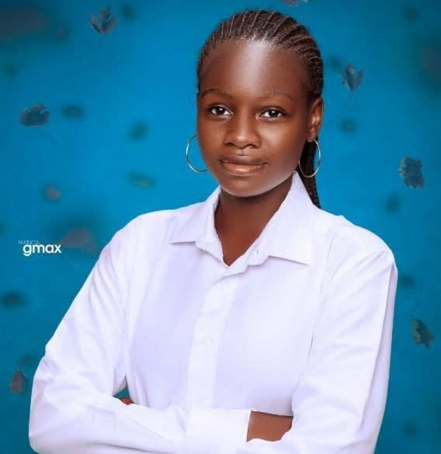

Irimiya Peace Anagu
Education
- Secondary School Certificate, Government DaySecondary School, Nukkai, 2016-2021
- Bachelor of Environmental Health Sciences, Taraba State University, 2021-2022
Skills
- Proficient in Microsoft Office Suite (Word, Excel, PowerPoint)
- Strong communication and interpersonal skills
- Ability to work well in a team environment
- Excellent problem-solving and critical thinking abilities
- Time management and organizational skills
Experience
- Internship at Waste Management and Resource Innovation Environmental Organisation, Jalingo, 2025-2026
- Volunteer at Marben foundation, 2026-2027
CERTIFICATIONS
- Climalearnation
- Human Rights Certification
- IRC/OTL Blue skill training with USAID